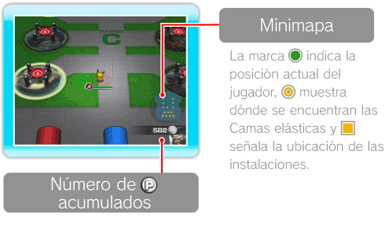
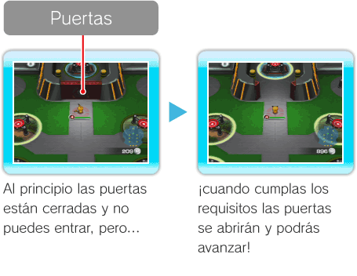
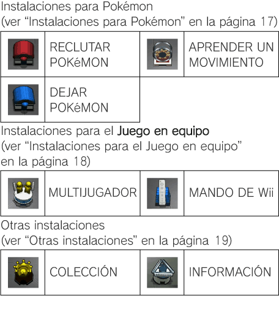
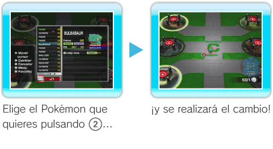

12 |
Terminal |
 |
|
Pantalla de la Terminal Se puede consultar el mapa de la Terminal y el número de 
Operaciones en la Terminal Además de saltar sobre las Camas elásticas para acceder a las distintas Fases o a Battle Royale, en la Terminal se pueden utilizar diferentes instalaciones.
Acceder a una Fase Cada Rango tiene 6 Fases. En la Terminal hay una Cama elástica para acceder a cada Fase. Si te aproximas a la Cama elástica de una Fase que ya has superado, podrás comprobar qué Pokémon te encontraste en ella, cuáles añadiste y el número de veces que la has superado. Los Pokémon que has añadido aparecerán en color; los que has encontrado en blanco y negro, y los que todavía no has visto se mostrarán con el símbolo
Participar en Battle Royale Para participar en Battle Royale es necesario añadir Pokémon con la Fuerza suficiente (ver “Menú de cambios” en la página 11). Si cumples los requisitos se abrirán las puertas y podrás acceder a Battle Royale usando la Cama elástica que hay al fondo. Si te acercas a las puertas de Battle Royale, puedes comprobar la Fuerza mínima requerida para acceder.

Utilizar las instalaciones En las diferentes instalaciones se pueden realizar varias operaciones como reclutar nuevos Pokémon o aprender movimientos. Para utilizar una instalación, acércate a ella y pulsa

Cambiar Pokémon Cuando quieras cambiar tu Pokémon, pulsa
 |
 .
.
 para abrir el Menú de cambios (ver “Menú de cambios” en la página 11).
para abrir el Menú de cambios (ver “Menú de cambios” en la página 11).
 |
 |
 |